CODING AGENTS AS PIXEL WORLD MODELS
traex/DeepSeek-V4.1-Flash · common50_0002
点击播放 · 原生 RGB 像素
逐轮保存的候选
回放视频、检查图与代码变化。
每份候选均可单独播放。实际图片检查记录在下方工具轨迹中。
候选 01播放与检查图
点击播放 · 原生 RGB 像素
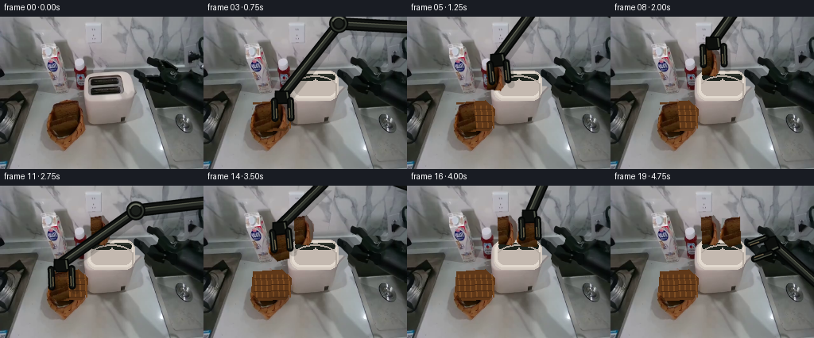
展开代码变化
--- 上一保存版本
+++ 本次保存版本
@@ -0,0 +1,433 @@
+from __future__ import annotations
+
+import math
+from pathlib import Path
+
+import numpy as np
+from PIL import Image, ImageDraw, ImageFilter
+
+import artifact_io
+
+
+ROOT = Path(__file__).resolve().parent
+W, H = 256, 192
+N, FPS = 20, 4
+SS = 4
+
+
+def _mask_from_polygon(points, size=(W, H), grow=0):
+ mask = Image.new("L", size, 0)
+ ImageDraw.Draw(mask).polygon(points, fill=255)
+ if grow:
+ mask = mask.filter(ImageFilter.MaxFilter(grow * 2 + 1))
+ return np.asarray(mask) > 127
+
+
+def inpaint_neighbourhood(rgb, mask, iterations=220):
+ """Small deterministic boundary-diffusion inpaint for the movable objects."""
+ out = rgb.astype(np.float32)
+ known = ~mask
+ work = mask.copy()
+ offsets = ((-1, 0), (1, 0), (0, -1), (0, 1),
+ (-1, -1), (1, -1), (-1, 1), (1, 1))
+
+ for _ in range(iterations):
+ if not work.any():
+ break
+ ys, xs = np.nonzero(work)
+ fill_y, fill_x, values = [], [], []
+ for y, x in zip(ys, xs):
+ total = np.zeros(3, np.float32)
+ weight = 0.0
+ for dy, dx in offsets:
+ yy, xx = y + dy, x + dx
+ if 0 <= yy < H and 0 <= xx < W and known[yy, xx]:
+ w = 1.0 if dx == 0 or dy == 0 else 0.72
+ total += out[yy, xx] * w
+ weight += w
+ if weight:
+ fill_y.append(y)
+ fill_x.append(x)
+ values.append(total / weight)
+ if not values:
+ break
+ out[fill_y, fill_x] = values
+ known[fill_y, fill_x] = True
+ work[fill_y, fill_x] = False
+
+ return np.clip(out, 0, 255).astype(np.uint8)
+
+
+def make_clean_plate(frame):
+ arm_poly = [
+ (239, 47), (255, 47), (255, 69), (249, 70), (238, 66),
+ (224, 61), (211, 56), (204, 51), (200, 58), (195, 58),
+ (193, 69), (184, 69), (183, 78), (175, 77), (173, 84),
+ (164, 82), (163, 92), (170, 91), (173, 96), (178, 104),
+ (186, 104), (188, 96), (192, 91), (190, 82), (200, 79),
+ (204, 72), (214, 67), (228, 64), (239, 69), (255, 69),
+ ]
+ bread_poly = [
+ (62, 107), (98, 104), (110, 116), (109, 134),
+ (103, 143), (70, 145), (60, 133),
+ ]
+ mask = _mask_from_polygon(arm_poly, grow=2) | _mask_from_polygon(bread_poly, grow=1)
+ plate = inpaint_neighbourhood(frame, mask)
+
+ # The inpainting pass cannot recover the toaster's straight slot geometry,
+ # so restore the exposed top surface with a restrained, sampled reconstruction.
+ top = Image.fromarray(plate)
+ draw = ImageDraw.Draw(top)
+ draw.rounded_rectangle((109, 68, 169, 105), radius=12, fill=(211, 201, 191))
+ draw.rounded_rectangle((111, 70, 167, 102), radius=10, fill=(226, 217, 207))
+ draw.rounded_rectangle((114, 72, 165, 99), radius=8, fill=(196, 185, 176))
+ draw.rounded_rectangle((115, 72, 140, 80), radius=4, fill=(28, 34, 28))
+ draw.rounded_rectangle((141, 72, 165, 80), radius=4, fill=(28, 34, 28))
+ draw.line((115, 73, 140, 73), fill=(82, 84, 73), width=1)
+ draw.line((141, 73, 165, 73), fill=(82, 84, 73), width=1)
+ draw.arc((112, 74, 168, 105), 200, 338, fill=(179, 169, 160), width=2)
+ draw.line((166, 84, 166, 101), fill=(178, 168, 159), width=2)
+ plate = np.asarray(top).copy()
+
+ # Restore the woven basket lip that lies behind the toast.
+ basket = Image.fromarray(plate)
+ bd = ImageDraw.Draw(basket)
+ bd.polygon(
+ [(62, 108), (98, 105), (110, 116), (109, 134),
+ (103, 143), (70, 145), (60, 133)],
+ fill=(95, 56, 25),
+ )
+ for x in range(64, 108, 7):
+ bd.line((x, 112, x + 2, 140), fill=(123, 76, 35), width=2)
+ for y in range(117, 143, 8):
+ bd.line((63, y, 106, y - 1), fill=(72, 41, 19), width=1)
+ plate = np.asarray(basket).copy()
+ return plate
+
+
+def crop_rgba(frame, box, polygon):
+ x0, y0, x1, y1 = box
+ rgb = frame[y0:y1, x0:x1].copy()
+ local = [(x - x0, y - y0) for x, y in polygon]
+ mask = Image.new("L", (x1 - x0, y1 - y0), 0)
+ ImageDraw.Draw(mask).polygon(local, fill=255)
+ mask = mask.filter(ImageFilter.GaussianBlur(0.42))
+ alpha = np.asarray(mask)
+ return np.dstack([rgb, alpha])
+
+
+def make_bread_sprites(frame):
+ left = crop_rgba(
+ frame,
+ (60, 104, 88, 147),
+ [(63, 109), (85, 107), (86, 141), (72, 145), (61, 134)],
+ )
+ right = crop_rgba(
+ frame,
+ (83, 102, 112, 147),
+ [(85, 108), (100, 105), (109, 116), (108, 135),
+ (102, 143), (86, 141)],
+ )
+ return left, right
+
+
+def rotate_rgba(sprite, angle):
+ image = Image.fromarray(sprite, "RGBA")
+ return np.asarray(image.rotate(angle, Image.Resampling.BICUBIC, expand=True))
+
+
+def paste_rgba(canvas, sprite, center, clip_bottom=None):
+ x = round(center[0] - sprite.shape[1] / 2)
+ y = round(center[1] - sprite.shape[0] / 2)
+ x0, y0 = max(0, x), max(0, y)
+ x1 = min(W, x + sprite.shape[1])
+ y1 = min(H, y + sprite.shape[0])
+ if clip_bottom is not None:
+ y1 = min(y1, int(math.floor(clip_bottom)))
+ if x1 <= x0 or y1 <= y0:
+ return
+ src = sprite[y0 - y:y1 - y, x0 - x:x1 - x].astype(np.float32)
+ alpha = src[..., 3:4] / 255.0
+ dst = canvas[y0:y1, x0:x1].astype(np.float32)
+ canvas[y0:y1, x0:x1] = np.clip(src[..., :3] * alpha + dst * (1 - alpha), 0, 255).astype(np.uint8)
+
+
+def capsule(draw, p0, p1, width, fill, outline=None):
+ p0 = tuple(round(v * SS) for v in p0)
+ p1 = tuple(round(v * SS) for v in p1)
+ w = round(width * SS)
+ if outline is not None:
+ draw.line((p0, p1), fill=outline, width=w + 4 * SS)
+ for p in (p0, p1):
+ r = (w + 4 * SS) / 2
+ draw.ellipse((p[0] - r, p[1] - r, p[0] + r, p[1] + r), fill=outline)
+ draw.line((p0, p1), fill=fill, width=w)
+ for p in (p0, p1):
+ r = w / 2
+ draw.ellipse((p[0] - r, p[1] - r, p[0] + r, p[1] + r), fill=fill)
+
+
+def joint(draw, p, radius=9):
+ x, y = p[0] * SS, p[1] * SS
+ r = radius * SS
+ draw.ellipse((x-r-2*SS, y-r-2*SS, x+r+2*SS, y+r+2*SS), fill=(8, 10, 9))
+ draw.ellipse((x-r, y-r, x+r, y+r), fill=(46, 51, 44))
+ draw.ellipse((x-r+2*SS, y-r+2*SS, x+r-2*SS, y+r-2*SS), fill=(13, 15, 13))
+ draw.ellipse((x-r*0.55, y-r*0.55, x+r*0.55, y+r*0.55), fill=(27, 31, 27))
+ draw.arc((x-r+SS, y-r+SS, x+r-SS, y+r-SS), 200, 315, fill=(107, 111, 97), width=2*SS)
+
+
+def ik(base, target, l1, l2, bend=1.0):
+ bx, by = base
+ tx, ty = target
+ dx, dy = tx - bx, ty - by
+ d = max(1e-5, math.hypot(dx, dy))
+ d = min(d, l1 + l2 - 1e-4)
+ ux, uy = dx / d, dy / d
+ along = (l1*l1 - l2*l2 + d*d) / (2*d)
+ height = math.sqrt(max(0.0, l1*l1 - along*along))
+ mx, my = bx + along * ux, by + along * uy
+ ex = mx + bend * height * (-uy)
+ ey = my + bend * height * ux
+ return ex, ey
+
+
+def draw_arm(wrist, hand_angle, grip_gap, bend=1.0):
+ base = (305.0, 16.0)
+ l1, l2 = 135.0, 115.0
+ elbow = ik(base, wrist, l1, l2, bend)
+
+ layer = Image.new("RGBA", (W * SS, H * SS), (0, 0, 0, 0))
+ draw = ImageDraw.Draw(layer)
+
+ # Rear linkage and its raised metal edge.
+ capsule(draw, base, elbow, 12.0, (17, 19, 17), (5, 7, 6))
+ capsule(draw, elbow, wrist, 10.0, (18, 20, 18), (5, 7, 6))
+ capsule(draw, base, elbow, 5.0, (42, 46, 40))
+ capsule(draw, elbow, wrist, 4.0, (48, 52, 45))
+
+ # Offset highlights make the links read as rigid painted metal.
+ def offset_line(a, b, dist):
+ vx, vy = b[0] - a[0], b[1] - a[1]
+ n = max(1e-5, math.hypot(vx, vy))
+ return ((a[0] - vy / n * dist, a[1] + vx / n * dist),
+ (b[0] - vy / n * dist, b[1] + vx / n * dist))
+
+ capsule(draw, *offset_line(base, elbow, 2.1), 1.35, (91, 94, 80))
+ capsule(draw, *offset_line(elbow, wrist, 1.8), 1.15, (95, 98, 83))
+ joint(draw, elbow, 10.0)
+
+ ux, uy = math.cos(hand_angle), math.sin(hand_angle)
+ px, py = -uy, ux
+
+ def point(fwd, side):
+ return (wrist[0] + ux*fwd + px*side, wrist[1] + uy*fwd + py*side)
+
+ # Wrist housing.
+ housing = [point(-6, -9), point(5, -10), point(11, -7),
+ point(11, 7), point(5, 10), point(-6, 9)]
+ draw.polygon([(round(x*SS), round(y*SS)) for x, y in housing], fill=(13, 15, 13),
+ outline=(5, 7, 6), width=2*SS)
+ draw.line(
+ (round(point(-4, -6)[0]*SS), round(point(-4, -6)[1]*SS),
+ round(point(7, -7)[0]*SS), round(point(7, -7)[1]*SS)),
+ fill=(74, 78, 66), width=2*SS,
+ )
+
+ # Parallel jaws. Their spacing is animated, while each jaw remains rigid.
+ for side in (-1, 1):
+ a = point(7, side * grip_gap / 2)
+ b = point(29, side * grip_gap / 2)
+ capsule(draw, a, b, 4.7, (18, 20, 18), (5, 7, 6))
+ capsule(draw, *offset_line(a, b, side * 1.25), 1.15, (79, 84, 70))
+ pad0 = point(17, side * (grip_gap / 2 - 1.8))
+ pad1 = point(28, side * (grip_gap / 2 - 1.8))
+ capsule(draw, pad0, pad1, 1.4, (103, 92, 68))
+
+ layer = layer.resize((W, H), Image.Resampling.LANCZOS)
+ return np.asarray(layer)
+
+
+def composite_rgba(canvas, rgba, offset=(0, 0), opacity=1.0):
+ x0, y0 = int(offset[0]), int(offset[1])
+ src_x0, src_y0 = max(0, -x0), max(0, -y0)
+ dst_x0, dst_y0 = max(0, x0), max(0, y0)
+ w = min(W - dst_x0, rgba.shape[1] - src_x0)
+ h = min(H - dst_y0, rgba.shape[0] - src_y0)
+ if w <= 0 or h <= 0:
+ return
+ src = rgba[src_y0:src_y0+h, src_x0:src_x0+w].astype(np.float32)
+ alpha = src[..., 3:4] / 255.0 * opacity
+ dst = canvas[dst_y0:dst_y0+h, dst_x0:dst_x0+w].astype(np.float32)
+ canvas[dst_y0:dst_y0+h, dst_x0:dst_x0+w] = np.clip(
+ src[..., :3] * alpha + dst * (1 - alpha), 0, 255
+ ).astype(np.uint8)
+
+
+def soft_shadow(canvas, center, radius):
+ size = 48
+ image = Image.new("L", (size, size), 0)
+ draw = ImageDraw.Draw(image)
+ draw.ellipse((8, 15, 40, 32), fill=48)
+ image = image.filter(ImageFilter.GaussianBlur(5))
+ alpha = np.asarray(image).astype(np.float32) / 255.0
+ x0 = round(center[0] - size/2)
+ y0 = round(center[1] - size/2)
+ for y in range(size):
+ yy = y0 + y
+ if not 0 <= yy < H:
+ continue
+ for x in range(size):
+ xx = x0 + x
+ if 0 <= xx < W and alpha[y, x] > 0:
+ a = alpha[y, x]
+ canvas[yy, xx] = np.clip(
+ canvas[yy, xx].astype(np.float32) * (1 - a) + np.array((25, 20, 17)) * a,
+ 0, 255
+ ).astype(np.uint8)
+
+
+def pose_for_frame(i):
+ # Wrist positions, gripper angle in radians, and jaw opening.
+ if i == 0:
+ return (205.0, 73.0), math.radians(160), 18.0, -1.0
+ if i == 1:
+ return (133.0, 86.0), math.radians(92), 25.0, 1.0
+ if i == 2:
+ return (100.0, 96.0), math.radians(88), 26.0, 1.0
+ if i == 3:
+ return (99.0, 99.0), math.radians(88), 20.0, 1.0
+ if i == 4:
+ return (99.0, 73.0), math.radians(88), 20.0, 1.0
+ if i == 5:
+ return (114.0, 52.0), math.radians(84), 20.0, 1.0
+ if i == 6:
+ return (129.0, 31.0), math.radians(88), 20.0, 1.0
+ if i == 7:
+ return (129.0, 36.0), math.radians(88), 20.0, 1.0
+ if i == 8:
+ return (129.0, 31.0), math.radians(88), 26.0, 1.0
+ if i == 9:
+ return (158.0, 49.0), math.radians(115), 24.0, 1.0
+ if i == 10:
+ return (103.0, 77.0), math.radians(105), 25.0, 1.0
+ if i == 11:
+ return (77.0, 98.0), math.radians(88), 26.0, 1.0
+ if i == 12:
+ return (76.0, 101.0), math.radians(88), 20.0, 1.0
+ if i == 13:
+ return (76.0, 75.0), math.radians(88), 20.0, 1.0
+ if i == 14:
+ return (96.0, 51.0), math.radians(84), 20.0, 1.0
+ if i == 15:
+ return (154.0, 31.0), math.radians(88), 20.0, 1.0
+ if i == 16:
+ return (154.0, 36.0), math.radians(88), 20.0, 1.0
+ if i == 17:
+ return (154.0, 31.0), math.radians(88), 26.0, 1.0
+ if i == 18:
+ return (194.0, 54.0), math.radians(135), 24.0, 1.0
+ return (205.0, 73.0), math.radians(160), 20.0, -1.0
+
+
+def bread_pose(i, first, sprite_size):
+ """Return center, angle, and clipping for one bread slice."""
+ h = sprite_size[0]
+ if first:
+ if i < 3:
+ return (96.0, 125.0), -3.0, None
+ if i == 3:
+ return (96.0, 122.0), -3.0, None
+ if i == 4:
+ return (97.0, 98.0), -2.0, None
+ if i == 5:
+ return (112.0, 75.0), 0.0, None
+ if i == 6:
+ return (126.0, 57.0), 0.0, None
+ if i == 7:
+ return (126.0, 61.0), 0.0, 77.0
+ return (126.0, 57.0), 0.0, 77.0
+ if i < 12:
+ return (73.0, 126.0), 4.0, None
+ if i == 12:
+ return (73.0, 123.0), 4.0, None
+ if i == 13:
+ return (74.0, 99.0), 3.0, None
+ if i == 14:
+ return (95.0, 75.0), 1.0, None
+ if i == 15:
+ return (151.0, 57.0), 0.0, None
+ if i == 16:
+ return (151.0, 61.0), 0.0, 77.0
+ return (151.0, 57.0), 0.0, 77.0
+
+
+def main():
+ frame0 = np.asarray(Image.open(ROOT / "first_frame.png").convert("RGB")).copy()
+ assert frame0.shape == (H, W, 3)
+ clean = make_clean_plate(frame0)
+ left_sprite, right_sprite = make_bread_sprites(frame0)
+ sprites = {
+ "left": {a: rotate_rgba(left_sprite, a) for a in (-4, 0, 1, 3, 4)},
+ "right": {a: rotate_rgba(right_sprite, a) for a in (-3, -2, 0)},
+ }
+
+ frames = []
+ for i in range(N):
+ if i == 0:
+ frames.append(frame0.copy())
+ continue
+
+ canvas = clean.copy()
+ wrist, angle, gap, bend = pose_for_frame(i)
+ arm = draw_arm(wrist, angle, gap, bend)
+
+ # Grounding shadow while bread is airborne.
+ if 3 <= i <= 7:
+ soft_shadow(canvas, (bread_pose(i, True, right_sprite.shape)[0][0] + 4, 145), 1.0)
+ if 12 <= i <= 16:
+ soft_shadow(canvas, (bread_pose(i, False, left_sprite.shape)[0][0] + 4, 145), 1.0)
+
+ # Bread in the basket until each slice is picked.
+ if i < 3:
+ center, angle_b, clip = bread_pose(i, True, right_sprite.shape)
+ paste_rgba(canvas, sprites["right"][-3], center, clip)
+ if i < 12:
+ center, angle_b, clip = bread_pose(i, False, left_sprite.shape)
+ paste_rgba(canvas, sprites["left"][4], center, clip)
+
+ # The first slice is already released while the arm travels for the second.
+ if i >= 8:
+ center, angle_b, clip = bread_pose(i, True, right_sprite.shape)
+ paste_rgba(canvas, sprites["right"][0], center, clip)
+
+ # Slice currently held by the gripper.
+ if 3 <= i <= 7:
+ center, angle_b, clip = bread_pose(i, True, right_sprite.shape)
+ paste_rgba(canvas, sprites["right"][-2 if i == 4 else 0], center, clip)
+ if 12 <= i <= 16:
+ center, angle_b, clip = bread_pose(i, False, left_sprite.shape)
+ paste_rgba(canvas, sprites["left"][3 if i == 13 else 0], center, clip)
+
+ # The second slice remains in its slot for the closing frames.
+ if i >= 17:
+ center, angle_b, clip = bread_pose(i, False, left_sprite.shape)
+ paste_rgba(canvas, sprites["left"][0], center, clip)
+
+ # A faint displaced silhouette keeps the arm visually attached to the scene.
+ shadow = arm.copy()
+ shadow[..., :3] = (8, 10, 9)
+ shadow[..., 3] = (shadow[..., 3].astype(np.float32) * 0.18).astype(np.uint8)
+ composite_rgba(canvas, shadow, (4, 6), 1.0)
+ composite_rgba(canvas, arm)
+ frames.append(canvas)
+
+ frames = np.asarray(frames, dtype=np.uint8)
+ artifact_io.save(frames, ROOT)
+
+ # Keep a compact review copy next to the required player assets.
+ Image.fromarray(clean).save(ROOT / ".tmp" / "clean_plate.png")
+
+
+if __name__ == "__main__":
+ main()
可观测工具轨迹
实际执行的命令与返回图片。
命令 1exit 0
/bin/bash -c "pwd && rg --files -g 'prompt.txt' -g 'GENERATION_RULES.md' -g '"'!*.mp4'"' -g '"'!*.webm'"'"
命令 2exit 0
/bin/bash -c 'ls -la'
命令 3exit 0
/bin/bash -c "find . -maxdepth 2 -type f -printf '%p %s bytes\\n' | sort"
命令 4exit 0
/bin/bash -c 'cat GENERATION_RULES.md'
命令 5exit 0
/bin/bash -c 'cat prompt.txt'
命令 6exit 0
/bin/bash -c 'cat task_spec.json'
命令 7exit 0
/bin/bash -c "sed -n '1,240p' artifact_io.py && sed -n '1,240p' player_template.html"
命令 8exit 0
/bin/bash -c "python - <<'PY'
try:
import cv2; print('cv2', cv2.__version__)
except Exception as e: print('no cv2', e)
try:
import scipy; print('scipy', scipy.__version__)
except Exception as e: print('no scipy', e)
PY"命令 9exit 0
/bin/bash -c "python - <<'PY'
from PIL import Image
im=Image.open('first_frame.png'); print(im.size, im.mode)
PY"命令 10exit 0
/bin/bash -c "python - <<'PY'
from PIL import Image
im=Image.open('first_frame.png')
# dump coarse colors at points
for p in [(75,130),(90,130),(120,100),(130,130),(200,100),(230,100),(100,50),(70,80),(30,170)]: print(p, im.getpixel(p))
PY"命令 11exit 0
/bin/bash -c "python - <<'PY'
from PIL import Image
im=Image.open('first_frame.png')
im.crop((130,35,256,135)).resize((504,400)).save('.tmp/arm_crop.png')
im.crop((45,90,180,175)).resize((540,340)).save('.tmp/objects_crop.png')
PY"命令 12exit 0
/bin/bash -c "python - <<'PY'
from PIL import Image, ImageDraw, ImageFont
im=Image.open('first_frame.png').resize((1024,768), Image.Resampling.NEAREST)
d=ImageDraw.Draw(im)
for x in range(0,257,10):
X=x*4
d.line((X,0,X,768), fill=(255,0,0) if x%50==0 else (255,255,0), width=1)
if x%20==0: d.text((X+2,2), str(x), fill='red')
for y in range(0,193,10):
Y=y*4
d.line((0,Y,1024,Y), fill=(255,0,0) if y%50==0 else (255,255,0), width=1)
if y%20==0: d.text((2,Y+2), str(y), fill='red')
im.save('.tmp/grid.png')
PY"命令 13exit 0
/bin/bash -c "python - <<'PY'
import cv2
im=cv2.imread('first_frame.png')
# create color sampled mask for dark arm
hsv=cv2.cvtColor(im,cv2.COLOR_BGR2HSV)
# print quantiles
print(hsv[30:120,160:256].reshape(-1,3).min(0), hsv[30:120,160:256].reshape(-1,3).max(0))
PY"命令 14exit 0
/bin/bash -c "python - <<'PY'
from PIL import Image
im=Image.open('first_frame.png')
im.crop((55,100,115,165)).resize((600,650), Image.Resampling.NEAREST).save('.tmp/basket_zoom.png')
PY"命令 15exit 0
/bin/bash -c "python - <<'PY'
from PIL import Image, ImageDraw
im=Image.open('first_frame.png').crop((150,20,256,125)).resize((848,840), Image.Resampling.NEAREST)
d=ImageDraw.Draw(im)
for x in range(150,257,5):
X=(x-150)*8; d.line((X,0,X,840),fill=(255,0,0),width=1)
if x%10==0:d.text((X+2,2),str(x),fill='red')
for y in range(20,126,5):
Y=(y-20)*8; d.line((0,Y,848,Y),fill=(255,0,0),width=1)
if y%10==0:d.text((2,Y+2),str(y),fill='red')
im.save('.tmp/arm_grid.png')
PY"命令 16exit 0
/bin/bash -c "python - <<'PY'
from PIL import Image,ImageDraw
im=Image.open('first_frame.png').crop((100,55,180,145)).resize((640,720),Image.Resampling.NEAREST)
d=ImageDraw.Draw(im)
for x in range(100,181,5):
X=(x-100)*8;d.line((X,0,X,720),fill=(255,0,0),width=1)
if x%10==0:d.text((X+2,2),str(x),fill='red')
for y in range(55,146,5):
Y=(y-55)*8;d.line((0,Y,640,Y),fill=(255,0,0),width=1)
if y%10==0:d.text((2,Y+2),str(y),fill='red')
im.save('.tmp/toaster_grid.png')
PY"命令 17exit 0
/bin/bash -c "python - <<'PY'
import cv2, numpy as np
from PIL import Image
im=cv2.imread('first_frame.png')
mask=np.zeros(im.shape[:2],np.uint8)
arm=np.array([(243,49),(256,49),(256,70),(247,71),(238,67),(224,62),(212,57),(205,52),(201,61),(195,60),(194,69),(185,70),(183,78),(175,77),(172,83),(163,82),(164,92),(171,91),(173,96),(178,105),(186,105),(187,97),(191,93),(190,84),(199,82),(202,77),(203,72),(212,69),(215,65),(228,64),(238,68),(256,69)],np.int32)
cv2.fillPoly(mask,[arm],255)
# include anti-aliased edge 1 px
mask=cv2.dilate(mask,np.ones((3,3),np.uint8),iterations=1)
bg=cv2.inpaint(im,mask,5,cv2.INPAINT_TELEA)
cv2.imwrite('.tmp/mask.png',mask)
cv2.imwrite('.tmp/bg_noarm.png',bg)
# toast mask
m2=np.zeros(im.shape[:2],np.uint8)
toast=np.array([(64,108),(98,105),(110,118),(107,136),(101,144),(68,145),(62,131)],np.int32)
cv2.fillPoly(m2,[toast],255)
bg2=cv2.inpaint(im,m2,5,cv2.INPAINT_TELEA)
cv2.imwrite('.tmp/bg_noarm_toast.png',bg2)
PY"命令 18exit 0
/bin/bash -c "python - <<'PY'
from PIL import Image, ImageEnhance
im=Image.open('first_frame.png').crop((55,90,125,165)).resize((700,750), Image.Resampling.LANCZOS)
im=ImageEnhance.Contrast(im).enhance(1.25)
im=ImageEnhance.Sharpness(im).enhance(1.5)
im.save('.tmp/basket_enhanced.png')
PY"命令 19exit 0
/bin/bash -c "python - <<'PY'
from PIL import Image
im=Image.open('first_frame.png')
im.crop((55,100,115,165)).resize((480,520), Image.Resampling.NEAREST).save('.tmp/basket_nn.png')
PY"命令 20exit 0
/bin/bash -c "python - <<'PY'
from PIL import Image
im=Image.open('first_frame.png')
im.crop((60,105,115,165)).resize((440,480),Image.Resampling.BILINEAR).save('.tmp/basket_bilinear.png')
PY"命令 21exit 0
/bin/bash -c "python - <<'PY'
import cv2,numpy as np
im=cv2.imread('first_frame.png')
bg=cv2.imread('.tmp/bg_noarm.png')
# patch arm region from inpainted
m=np.zeros(im.shape[:2],np.uint8)
pts=np.array([(240,48),(256,48),(256,73),(236,72),(221,65),(208,60),(202,54),(194,60),(193,70),(183,72),(181,81),(170,85),(168,95),(184,108),(190,91),(201,78),(213,72),(231,70)],np.int32)
cv2.fillPoly(m,[pts],255)
m=cv2.dilate(m,np.ones((5,5),np.uint8),iterations=1)
bg=cv2.inpaint(im,m,7,cv2.INPAINT_TELEA)
cv2.imwrite('.tmp/bg_noarm2.png',bg)
# crop alpha toast
mask=np.zeros(im.shape[:2],np.uint8)
toast=np.array([(63,109),(97,105),(110,117),(108,135),(102,144),(70,146),(61,134)],np.int32)
cv2.fillPoly(mask,[toast],255)
mask=cv2.GaussianBlur(mask,(3,3),.6)
rgba=np.dstack([cv2.cvtColor(im,cv2.COLOR_BGR2RGB),mask])
cv2.imwrite('.tmp/toast.png',cv2.cvtColor(rgba,cv2.COLOR_RGBA2BGRA))
PY"命令 22exit 0
/bin/bash -c "python - <<'PY'
import cv2,numpy as np
im=cv2.imread('first_frame.png')
# remove exact arm but preserve edge antialias via polygon close to boundary
pts=np.array([(239,47),(255,47),(255,69),(249,70),(238,66),(224,61),(211,56),(204,51),(200,58),(195,58),(193,69),(184,69),(183,78),(175,77),(173,84),(164,82),(163,92),(170,91),(173,96),(178,104),(186,104),(188,96),(192,91),(190,82),(200,79),(204,72),(214,67),(228,64),(239,69),(255,69)],np.int32)
m=np.zeros(im.shape[:2],np.uint8);cv2.fillPoly(m,[pts],255);m=cv2.dilate(m,np.ones((3,3),np.uint8),1)
bg=cv2.inpaint(im,m,5,cv2.INPAINT_TELEA);cv2.imwrite('.tmp/bg_noarm3.png',bg)
# save arm RGBA using mask
rgb=cv2.cvtColor(im,cv2.COLOR_BGR2RGB)
a=cv2.GaussianBlur(m,(5,5),.7)
cv2.imwrite('.tmp/arm.png',cv2.cvtColor(np.dstack([rgb,a]),cv2.COLOR_RGBA2BGRA))
PY"命令 23exit 0
/bin/bash -c "python - <<'PY'
from PIL import Image
im=Image.open('first_frame.png')
im.crop((55,80,140,160)).resize((850,800),Image.Resampling.LANCZOS).save('.tmp/basket_lanczos.png')
PY"命令 24exit 0
/bin/bash -c "python - <<'PY'
from PIL import Image,ImageDraw
im=Image.open('first_frame.png')
# Make precise large crop and overlaid crosshairs every pixel? grid every 2 px
c=im.crop((58,102,115,165)).resize((570,630),Image.Resampling.NEAREST)
d=ImageDraw.Draw(c)
for x in range(58,116,2):
X=(x-58)*10; d.line((X,0,X,630),fill=(255,0,0),width=1)
if x%10==0:d.text((X+2,2),str(x),fill='red')
for y in range(102,166,2):
Y=(y-102)*10; d.line((0,Y,570,Y),fill=(255,0,0),width=1)
if y%10==0:d.text((2,Y+2),str(y),fill='red')
c.save('.tmp/basket_grid.png')
PY"命令 25exit 0
/bin/bash -c "python - <<'PY'
import cv2,numpy as np
im=cv2.imread('.tmp/bg_noarm3.png')
m=np.zeros(im.shape[:2],np.uint8)
poly=np.array([(62,106),(98,104),(110,116),(109,134),(103,143),(70,145),(60,133)],np.int32)
cv2.fillPoly(m,[poly],255);m=cv2.dilate(m,np.ones((3,3),np.uint8),1)
out=cv2.inpaint(im,m,4,cv2.INPAINT_TELEA)
cv2.imwrite('.tmp/basket_empty.png',out)
PY"命令 26exit 0
/bin/bash -c "python - <<'PY'
from PIL import Image
im=Image.open('first_frame.png')
for name,box in [('toast_left',(60,103,87,148)),('toast_right',(80,103,112,148)),('toast_full',(58,101,113,150)),('slot_left',(108,69,138,104)),('slot_right',(138,69,169,104))]:
im.crop(box).resize(((box[2]-box[0])*10,(box[3]-box[1])*10),Image.Resampling.NEAREST).save('.tmp/'+name+'.png')
PY"命令 27exit 0
/bin/bash -c 'python generate.py'
命令 28exit 0
/bin/bash -c "python - <<'PY'
try:
import skimage; print('skimage', skimage.__version__)
except Exception as e: print('no skimage', e)
PY"命令 29exit 0
/bin/bash -c "python - <<'PY'
from PIL import Image
for i in range(20): print(i, Image.open(f'frames/{i:02d}.png').getpixel((100,100)))
PY"命令 30exit 0
/bin/bash -c "python - <<'PY'
from PIL import Image
import numpy as np
im=np.asarray(Image.open('first_frame.png'))
# map points of slot and surrounding toaster
for y in [65,70,75,80,85,90,95,100,105]:
print(y, [(x,tuple(im[y,x])) for x in [108,112,116,120,130,138,142,150,160,168]])
PY"命令 31exit 0
/bin/bash -c "python - <<'PY'
import numpy as np
from PIL import Image
im=np.asarray(Image.open('first_frame.png'))
# print scanline segments dark around toaster top
for y in [74,76,78,80,82,84,86,88,90,92,94,96,98]:
a=im[y,100:180].mean(1)
runs=[];on=False
for j,v in enumerate(a):
if v<100 and not on:s=j;on=True
if on and (v>=100 or j==len(a)-1):
e=j if v>=100 else j+1
if e-s>=2:runs.append((s+100,e+100))
on=False
print(y,runs)
PY"命令 32exit 0
/bin/bash -c "python - <<'PY'
from PIL import Image,ImageDraw
im=Image.open('first_frame.png').crop((100,58,180,112)).resize((960,648),Image.Resampling.NEAREST)
d=ImageDraw.Draw(im)
for x in range(100,181,2):
X=(x-100)*12;d.line((X,0,X,648),fill=(255,0,0),width=1)
if x%10==0:d.text((X+2,2),str(x),fill='red')
for y in range(58,113,2):
Y=(y-58)*12;d.line((0,Y,960,Y),fill=(255,0,0),width=1)
if y%10==0:d.text((2,Y+2),str(y),fill='red')
im.save('.tmp/slots_detail.png')
PY"命令 33exit 0
/bin/bash -c "python - <<'PY'
import numpy as np
from PIL import Image
im=np.asarray(Image.open('first_frame.png')).astype(float)
# print average gray in regions
for box in [(112,72,150,79),(112,80,150,99),(112,73,150,100),(118,74,145,78),(112,68,150,72),(100,100,170,105)]:
x0,y0,x1,y1=box; a=im[y0:y1,x0:x1].mean((0,1)); print(box,a)
PY"命令 34exit 0
/bin/bash -c "python - <<'PY'
import generate
import numpy as np
from PIL import Image
f=np.asarray(Image.open('first_frame.png'))
a=generate._mask_from_polygon([(239,47),(255,47),(255,69),(249,70),(238,66),(224,61),(211,56),(204,51),(200,58),(195,58),(193,69),(184,69),(183,78),(175,77),(173,84),(164,82),(163,92),(170,91),(173,96),(178,104),(186,104),(188,96),(192,91),(190,82),(200,79),(204,72),(214,67),(228,64),(239,69),(255,69)],grow=2)
b=generate.inpaint_neighbourhood(f,a)
Image.fromarray(b).save('.tmp/clean_arm_only.png')
b2=generate.inpaint_neighbourhood(b,generate._mask_from_polygon([(62,107),(98,104),(110,116),(109,134),(103,143),(70,145),(60,133)],grow=1))
Image.fromarray(b2).save('.tmp/clean_both.png')
PY"命令 35exit 0
/bin/bash -c "python - <<'PY'
from PIL import Image
# contact sheet all 20 at 2x
ims=[Image.open(f'frames/{i:02d}.png') for i in range(20)]
w,h=256,192
sheet=Image.new('RGB',(w*5,h*4),(20,20,20))
for i,im in enumerate(ims):sheet.paste(im,((i%5)*w,(i//5)*h))
sheet.resize((1280,768),Image.Resampling.NEAREST).save('.tmp/all_frames.png')
PY"命令 36exit 0
/bin/bash -c "python - <<'PY'
from PIL import Image
import numpy as np
im=np.asarray(Image.open('first_frame.png'))
for p in [(129,85),(129,90),(129,95),(129,99),(129,102),(129,104),(160,85),(160,95),(160,100),(111,70),(111,75),(111,80),(111,100),(168,70),(168,80),(168,100)]: print(p,tuple(im[p[1],p[0]]))
PY"命令 37exit 0
/bin/bash -c "python - <<'PY'
from PIL import Image
im=Image.open('first_frame.png')
im.crop((108,68,162,103)).resize((1080,700),Image.Resampling.LANCZOS).save('.tmp/slot_lanczos.png')
PY"命令 38exit 0
/bin/bash -c "python - <<'PY'
from PIL import Image
for i in [1,2,3,4,6,7,8,10,11,12,13,15,17,19]:
Image.open(f'frames/{i:02d}.png').resize((768,576),Image.Resampling.NEAREST).save(f'.tmp/f{i:02d}.png')
PY"命令 39exit 0
/bin/bash -c "python - <<'PY'
import numpy as np
from PIL import Image
im=np.asarray(Image.open('first_frame.png')).astype(int)
# print each row's most common colors in toaster top 105:170 x 68:102
from collections import Counter
for y in range(68,103,2):
c=Counter(map(tuple,im[y,105:171]))
print(y,c.most_common(4))
PY"命令 40exit 0
/bin/bash -c "sed -n '1,260p' generate.py"
命令 41exit 0
/bin/bash -c "sed -n '260,560p' generate.py"
命令 42exit 0
/bin/bash -c "python - <<'PY' import math from generate import ik for base in [(305,16),(275,48),(260,49)]: for w in [(205,73),(133,86),(100,96),(129,31),(77,98),(154,31)]: print(base,w,'bend+',ik(base,w,135,115,1),'bend-',ik(base,w,135,115,-1)) print() PY"
命令 43exit 0
/bin/bash -c "python - <<'PY'
from generate import ik
for b,l1,l2 in [((255,45),110,100),((270,35),120,100),((260,50),130,100),((245,40),120,100),((255,30),130,105)]:
print('---',b,l1,l2)
for w in [(205,73),(133,86),(100,96),(129,31),(77,98),(154,31),(194,54)]: print(w, tuple(round(v,1) for v in ik(b,w,l1,l2,1)), tuple(round(v,1) for v in ik(b,w,l1,l2,-1)))
PY"命令 44exit 0
/bin/bash -c "python - <<'PY'
from PIL import Image
import numpy as np
im=np.asarray(Image.open('first_frame.png'))
# find vertical median columns for slots on selected rows
for y in range(70,99):
vals=im[y,105:171].mean(1)
xs=np.where(vals<80)[0]+105
# runs
runs=[]
if len(xs):
s=xs[0];p=xs[0]
for x in xs[1:]:
if x>p+1:runs.append((s,p));s=x
p=x
runs.append((s,p))
print(y,runs)
PY"命令 45exit 0
/bin/bash -c "python - <<'PY'
from PIL import Image
import numpy as np
im=np.asarray(Image.open('first_frame.png'))
# print RGB patches in text symbolic
for y in range(68,104):
row=''
for x in range(104,171):
v=im[y,x].mean()
row += '#' if v<40 else 'X' if v<80 else '+' if v<130 else '.' if v<175 else ' '
print(f'{y:03d}',row)
PY"命令 46exit 0
/bin/bash -c "python - <<'PY'
from generate import ik
for base,l1,l2 in [((247,40),95,100),((247,40),100,110),((250,45),90,100),((240,35),100,110),((250,40),100,120)]:
print('---',base,l1,l2)
for w in [(205,73),(133,86),(100,96),(129,31),(77,98),(154,31),(194,54)]:
print(w, tuple(round(v,1) for v in ik(base,w,l1,l2,1)), tuple(round(v,1) for v in ik(base,w,l1,l2,-1)))
PY"命令 47exit 0
/bin/bash -c "python - <<'PY'
from generate import ik
for base,l1,l2 in [((235,70),80,100),((240,70),85,100),((230,80),90,95),((245,75),95,100),((235,60),85,100)]:
print('---',base,l1,l2)
for w in [(205,73),(133,86),(100,96),(129,31),(77,98),(154,31),(194,54)]:
print(w, tuple(round(v,1) for v in ik(base,w,l1,l2,1)), tuple(round(v,1) for v in ik(base,w,l1,l2,-1)))
PY"命令 48exit 0
/bin/bash -c "python - <<'PY'
from generate import ik
for b in [(235,70),(240,60),(245,55),(230,65),(240,50)]:
print('--',b)
for w in [(205,73),(133,86),(100,96),(129,31),(77,98),(154,31),(194,54)]:
print(w, tuple(round(v,1) for v in ik(b,w,70,115,1)),tuple(round(v,1) for v in ik(b,w,70,115,-1)))
PY"命令 49exit 0
/bin/bash -c "python - <<'PY'
from generate import ik
for b in [(235,70),(240,60),(245,55),(230,65),(240,50),(245,45),(250,40)]:
print('--',b)
for w in [(205,73),(133,86),(100,96),(129,31),(77,98),(154,31),(194,54)]:
e=ik(b,w,120,90,1)
print(w, tuple(round(v,1) for v in e))
PY"命令 50exit 0
/bin/bash -c "python - <<'PY'
from generate import ik
for b in [(235,70),(240,60),(245,55),(230,65),(240,50),(245,45),(250,40)]:
print('--',b)
for w in [(205,73),(133,86),(100,96),(129,31),(77,98),(154,31),(194,54)]:
e=ik(b,w,140,70,1)
print(w, tuple(round(v,1) for v in e))
PY"命令 51exit 0
/bin/bash -c "python - <<'PY'
from generate import ik
for b,l1,l2 in [((235,70),90,110),((235,70),100,100),((235,70),110,90),((235,70),120,80),((245,55),100,100)]:
print('---',b,l1,l2)
for w in [(205,73),(133,86),(100,96),(129,31),(77,98),(154,31),(194,54)]: print(w,tuple(round(v,1) for v in ik(b,w,l1,l2,1)))
PY"命令 52exit 0
/bin/bash -c "python - <<'PY' from generate import ik for b in [(235,70),(240,60),(230,65)]: for l1,l2 in [(85,105),(90,100),(95,95),(100,90)]: vals=[] for w in [(205,73),(133,86),(100,96),(129,31),(77,98),(154,31),(194,54)]: vals.append(tuple(round(v) for v in ik(b,w,l1,l2,1))) print(b,l1,l2,vals) PY"
命令 53exit 0
/bin/bash -c "python - <<'PY'
from generate import ik
for b in [(260,80),(250,85),(240,90),(230,100),(220,110),(250,70)]:
print('--',b)
for w in [(205,73),(133,86),(100,96),(129,31),(77,98),(154,31),(194,54)]:
print(w,tuple(round(v) for v in ik(b,w,120,95,1)))
PY"命令 54exit 0
/bin/bash -c "python - <<'PY'
from PIL import Image
import numpy as np
im=np.asarray(Image.open('first_frame.png'))
# approximate toaster edge x positions at each y by strongest gradient
for y in range(68,103):
g=np.abs(np.diff(im[y].mean(1)))
inds=np.argsort(g[100:180])[-5:]+100
print(y,sorted((int(i),round(float(g[i]),1)) for i in inds))
PY"命令 55exit 0
/bin/bash -c "python - <<'PY'
import cv2,numpy as np
im=cv2.imread('first_frame.png')
# detect slot black mask by grayscale under 65 in toaster box, then contours
r=im[68:101,108:160]
g=cv2.cvtColor(r,cv2.COLOR_BGR2GRAY)
m=(g<70).astype(np.uint8)*255
cv2.imwrite('.tmp/slot_mask.png',m)
num,l,stats,c=cv2.connectedComponentsWithStats(m)
print(stats)
PY"命令 56exit 0
/bin/bash -c "python - <<'PY'
import numpy as np
from PIL import Image
im=np.asarray(Image.open('first_frame.png')).astype(float)
# Print row median and avg color for left/right slot surfaces and rim
for y in [73,74,75,76,77,78,79,80,81,82,83,84,85,86,87,88,89,90,91,92,93,94,95,96,97,98,99,100,101,102]:
vals=[]
for a,b in [(114,120),(121,134),(136,148),(110,113),(149,153)]:
p=im[y,a:b].mean(0)
vals.append(tuple(int(v) for v in p))
print(y,vals)
PY"命令 57exit 0
/bin/bash -c "python - <<'PY'
from generate import ik
for b,l1,l2 in [((270,65),110,90),((270,60),105,95),((275,55),100,100),((280,50),110,95),((270,70),120,90)]:
print('--',b,l1,l2)
for w in [(205,73),(133,86),(100,96),(129,31),(77,98),(154,31),(194,54)]:
print(w, tuple(round(v) for v in ik(b,w,l1,l2,1)), tuple(round(v) for v in ik(b,w,l1,l2,-1)))
PY"命令 58exit 0
/bin/bash -c "python - <<'PY' from generate import ik b=(270,65);l1=120;l2=95 for w in [(205,73),(133,86),(100,96),(129,31),(77,98),(154,31),(194,54)]:print(w,ik(b,w,l1,l2,1),ik(b,w,l1,l2,-1)) PY"
命令 59exit 0
/bin/bash -c "python - <<'PY'
from generate import ik
for b,l1,l2 in [((270,65),110,100),((270,65),115,95),((270,60),110,100),((270,70),110,95),((280,65),115,95)]:
print('--',b,l1,l2)
for w in [(205,73),(133,86),(100,96),(129,31),(77,98),(154,31),(194,54)]: print(w,tuple(round(v) for v in ik(b,w,l1,l2,1)))
PY"命令 60exit 0
/bin/bash -c "python - <<'PY'
from generate import ik
for l1,l2 in [(70,150),(80,150),(90,150),(100,150),(70,130),(90,130),(110,130),(80,120),(100,120)]:
print('--',l1,l2)
for w in [(205,73),(133,86),(100,96),(129,31),(77,98),(154,31),(194,54)]:
print(w,tuple(round(v) for v in ik((245,50),w,l1,l2,1)),tuple(round(v) for v in ik((245,50),w,l1,l2,-1)))
PY"命令 61exit 0
/bin/bash -c "python - <<'PY' from generate import ik for b in [(245,50),(255,45),(240,55),(230,60)]: for l1,l2 in [(80,130),(90,120),(100,110),(110,100)]: vals=[] for w in [(205,73),(133,86),(100,96),(129,31),(77,98),(154,31),(194,54)]: vals.append(tuple(round(v) for v in ik(b,w,l1,l2,1))) print(b,l1,l2,vals) PY"
命令 62exit 0
/bin/bash -c "python - <<'PY' from generate import ik for b in [(245,50),(255,45),(240,55),(230,60)]: for l1,l2 in [(70,100),(80,90),(90,80),(60,110)]: vals=[] for w in [(205,73),(133,86),(100,96),(129,31),(77,98),(154,31),(194,54)]: vals.append(tuple(round(v) for v in ik(b,w,l1,l2,1))) print(b,l1,l2,vals) PY"
命令 63exit 0
/bin/bash -c "python - <<'PY' from generate import ik for b in [(245,50),(255,45),(240,55),(230,60)]: for l1,l2 in [(80,100),(90,90),(100,80),(70,110)]: vals=[] for w in [(205,73),(133,86),(100,96),(129,31),(77,98),(154,31),(194,54)]: vals.append(tuple(round(v) for v in ik(b,w,l1,l2,1))) print(b,l1,l2,vals) PY"
命令 64exit 0
/bin/bash -c "python - <<'PY'
from generate import ik
for b in [(235,70),(245,65),(255,60),(265,55)]:
print('---',b)
for w in [(205,73),(133,86),(100,96),(129,31),(77,98),(154,31),(194,54)]: print(w,tuple(round(v) for v in ik(b,w,105,95,1)))
PY"命令 65exit 0
/bin/bash -c "python - <<'PY'
from generate import ik
b=(290,45)
for l1,l2 in [(115,105),(120,100),(110,110),(125,95)]:
print('--',l1,l2)
for w in [(205,73),(133,86),(100,96),(129,31),(77,98),(154,31),(194,54)]: print(w,tuple(round(v) for v in ik(b,w,l1,l2,1)),tuple(round(v) for v in ik(b,w,l1,l2,-1)))
PY"命令 66exit 0
/bin/bash -c "python - <<'PY'
from generate import ik
for b,l1,l2 in [((275,45),120,100),((270,50),125,100),((280,40),120,100),((275,55),115,100)]:
print('--',b,l1,l2)
for w in [(205,73),(133,86),(100,96),(129,31),(77,98),(154,31),(194,54)]:print(w,tuple(round(v) for v in ik(b,w,l1,l2,1)))
PY"命令 67exit 0
/bin/bash -c "python - <<'PY'
from generate import ik
for b,l1,l2 in [((290,60),140,80),((285,65),135,85),((295,55),145,75),((280,70),130,90),((300,50),140,85)]:
print('--',b,l1,l2)
for w in [(205,73),(133,86),(100,96),(129,31),(77,98),(154,31),(194,54)]:print(w,tuple(round(v) for v in ik(b,w,l1,l2,1)))
PY"命令 68exit 0
/bin/bash -c "python - <<'PY'
from generate import ik
for b,l1,l2 in [((270,65),120,100),((275,65),125,95),((280,60),130,90),((285,60),135,90)]:
print('--',b,l1,l2)
for w in [(205,73),(133,86),(100,96),(129,31),(77,98),(154,31),(194,54)]:print(w,tuple(round(v) for v in ik(b,w,l1,l2,1)))
PY"命令 69exit 0
/bin/bash -c "python - <<'PY'
from generate import ik
for b,l1,l2 in [((275,70),130,90),((270,75),125,95),((280,75),135,85),((275,80),130,90),((270,80),125,95)]:
print('--',b,l1,l2)
for w in [(205,73),(133,86),(100,96),(129,31),(77,98),(154,31),(194,54)]:print(w,tuple(round(v) for v in ik(b,w,l1,l2,1)))
PY"命令 70exit 0
/bin/bash -c "python - <<'PY'
from generate import ik
for b,l1,l2 in [((250,90),120,100),((255,85),120,100),((250,95),120,100),((260,90),125,95)]:
print('--',b,l1,l2)
for w in [(205,73),(133,86),(100,96),(129,31),(77,98),(154,31),(194,54)]:print(w,tuple(round(v) for v in ik(b,w,l1,l2,1)))
PY"命令 71exit 0
/bin/bash -c "python - <<'PY'
from generate import ik
for b,l1,l2 in [((255,80),130,90),((255,75),135,85),((260,70),135,90),((250,75),130,90),((265,70),140,85)]:
print('--',b,l1,l2)
for w in [(205,73),(133,86),(100,96),(129,31),(77,98),(154,31),(194,54)]:print(w,tuple(round(v) for v in ik(b,w,l1,l2,1)))
PY"命令 72exit 0
/bin/bash -c "python - <<'PY'
from generate import ik
for b,l1,l2 in [((255,85),130,100),((250,85),125,105),((260,80),135,95),((255,90),130,105),((260,85),135,100)]:
print('--',b,l1,l2)
for w in [(205,73),(133,86),(100,96),(129,31),(77,98),(154,31),(194,54)]:print(w,tuple(round(v) for v in ik(b,w,l1,l2,1)))
PY"命令 73exit 0
/bin/bash -c "python - <<'PY'
from generate import ik
for b,l1,l2 in [((275,60),120,100),((280,60),125,95),((270,65),115,105),((285,55),125,100),((275,55),120,105)]:
print('--',b,l1,l2)
for w in [(205,73),(133,86),(100,96),(129,31),(77,98),(154,31),(194,54)]:print(w,tuple(round(v) for v in ik(b,w,l1,l2,1)))
PY"命令 74exit 0
/bin/bash -c "python - <<'PY'
from generate import ik
for b,l1,l2 in [((300,75),150,80),((300,70),145,85),((295,80),145,80),((305,65),150,85),((300,80),150,75)]:
print('--',b,l1,l2)
for w in [(205,73),(133,86),(100,96),(129,31),(77,98),(154,31),(194,54)]:print(w,tuple(round(v) for v in ik(b,w,l1,l2,1)))
PY"命令 75exit 0
/bin/bash -c "python - <<'PY'
from generate import ik
for b,l1,l2 in [((300,80),150,100),((295,85),145,100),((305,75),155,100),((300,85),150,105),((295,90),145,105)]:
print('--',b,l1,l2)
for w in [(205,73),(133,86),(100,96),(129,31),(77,98),(154,31),(194,54)]:print(w,tuple(round(v) for v in ik(b,w,l1,l2,1)))
PY"命令 76exit 0
/bin/bash -c "python - <<'PY'
from generate import ik
for b,l1,l2 in [((295,90),140,110),((290,95),135,115),((300,90),145,110),((285,100),130,120)]:
print('--',b,l1,l2)
for w in [(205,73),(133,86),(100,96),(129,31),(77,98),(154,31),(194,54)]:print(w,tuple(round(v) for v in ik(b,w,l1,l2,1)))
PY"命令 77exit 0
/bin/bash -c "python - <<'PY'
from generate import ik
for b,l1,l2 in [((300,80),170,70),((295,85),165,75),((305,75),175,70),((300,90),170,80)]:
print('--',b,l1,l2)
for w in [(205,73),(133,86),(100,96),(129,31),(77,98),(154,31),(194,54)]:print(w,tuple(round(v) for v in ik(b,w,l1,l2,1)))
PY"命令 78exit 0
/bin/bash -c "python - <<'PY'
from generate import ik
for b,l1,l2 in [((300,80),165,85),((295,85),160,90),((305,75),170,80),((300,85),165,90),((295,90),160,95)]:
print('--',b,l1,l2)
for w in [(205,73),(133,86),(100,96),(129,31),(77,98),(154,31),(194,54)]:print(w,tuple(round(v) for v in ik(b,w,l1,l2,1)))
PY"命令 79exit 0
/bin/bash -c "python - <<'PY'
from generate import ik
for b,l1,l2 in [((300,80),160,95),((295,85),155,100),((300,85),160,100),((305,80),165,95)]:
print('--',b,l1,l2)
for w in [(205,73),(133,86),(100,96),(129,31),(77,98),(154,31),(194,54)]:print(w,tuple(round(v) for v in ik(b,w,l1,l2,1)))
PY"命令 80exit 0
/bin/bash -c "python - <<'PY'
from generate import ik
for b,l1,l2 in [((300,80),175,75),((295,85),170,80),((305,75),180,75),((300,90),175,85),((310,80),180,80)]:
print('--',b,l1,l2)
for w in [(205,73),(133,86),(100,96),(129,31),(77,98),(154,31),(194,54)]:print(w,tuple(round(v) for v in ik(b,w,l1,l2,1)))
PY"命令 81exit 0
/bin/bash -c "python - <<'PY'
from generate import ik
for b,l1,l2 in [((300,80),160,80),((295,85),155,85),((305,75),165,80),((300,85),160,85),((295,90),155,90)]:
print('--',b,l1,l2)
for w in [(205,73),(133,86),(100,96),(129,31),(77,98),(154,31),(194,54)]:print(w,tuple(round(v) for v in ik(b,w,l1,l2,1)))
PY"命令 82exit 0
/bin/bash -c "python - <<'PY'
from generate import ik
for b,l1,l2 in [((300,80),145,95),((295,85),140,100),((305,75),150,95),((300,85),145,100),((295,90),140,105)]:
print('--',b,l1,l2)
for w in [(205,73),(133,86),(100,96),(129,31),(77,98),(154,31),(194,54)]:print(w,tuple(round(v) for v in ik(b,w,l1,l2,1)))
PY"命令 83exit 0
/bin/bash -c "python - <<'PY'
from generate import ik
for b,l1,l2 in [((300,80),135,105),((295,85),130,110),((305,75),140,105),((300,85),135,110),((295,90),130,115)]:
print('--',b,l1,l2)
for w in [(205,73),(133,86),(100,96),(129,31),(77,98),(154,31),(194,54)]:print(w,tuple(round(v) for v in ik(b,w,l1,l2,1)))
PY"命令 84exit 0
/bin/bash -c "python - <<'PY'
from generate import ik
for b,l1,l2 in [((300,80),125,115),((295,85),120,120),((305,75),130,115),((300,85),125,120),((295,90),120,125)]:
print('--',b,l1,l2)
for w in [(205,73),(133,86),(100,96),(129,31),(77,98),(154,31),(194,54)]:print(w,tuple(round(v) for v in ik(b,w,l1,l2,1)))
PY"命令 85exit 0
/bin/bash -c "python - <<'PY'
from generate import ik
for b,l1,l2 in [((310,80),155,90),((315,75),160,85),((310,85),155,95),((315,80),160,90),((305,85),150,95)]:
print('--',b,l1,l2)
for w in [(205,73),(133,86),(100,96),(129,31),(77,98),(154,31),(194,54)]:print(w,tuple(round(v) for v in ik(b,w,l1,l2,1)))
PY"命令 86exit 0
/bin/bash -c "python - <<'PY'
from generate import ik
for b,l1,l2 in [((320,70),170,80),((325,65),175,75),((320,75),170,85),((315,70),165,85),((325,70),175,80)]:
print('--',b,l1,l2)
for w in [(205,73),(133,86),(100,96),(129,31),(77,98),(154,31),(194,54)]:print(w,tuple(round(v) for v in ik(b,w,l1,l2,1)))
PY"命令 87exit 0
/bin/bash -c "python - <<'PY'
from generate import ik
for b,l1,l2 in [((320,60),175,75),((325,55),180,70),((320,65),175,80),((315,60),170,80),((330,55),185,70)]:
print('--',b,l1,l2)
for w in [(205,73),(133,86),(100,96),(129,31),(77,98),(154,31),(194,54)]:print(w,tuple(round(v) for v in ik(b,w,l1,l2,1)))
PY"命令 88exit 0
/bin/bash -c "python - <<'PY'
from generate import ik
for b,l1,l2 in [((320,50),180,75),((325,45),185,70),((320,55),180,80),((315,50),175,80),((330,45),190,70)]:
print('--',b,l1,l2)
for w in [(205,73),(133,86),(100,96),(129,31),(77,98),(154,31),(194,54)]:print(w,tuple(round(v) for v in ik(b,w,l1,l2,1)))
PY"命令 89exit 0
/bin/bash -c "python - <<'PY'
from generate import ik
for b,l1,l2 in [((300,90),150,105),((305,90),155,105),((300,95),150,110),((305,95),155,110),((310,90),160,105)]:
print('--',b,l1,l2)
for w in [(205,73),(133,86),(100,96),(129,31),(77,98),(154,31),(194,54)]:print(w,tuple(round(v) for v in ik(b,w,l1,l2,1)))
PY"视觉工具实际返回图片 1

视觉工具实际返回图片 2
视觉工具实际返回图片 3
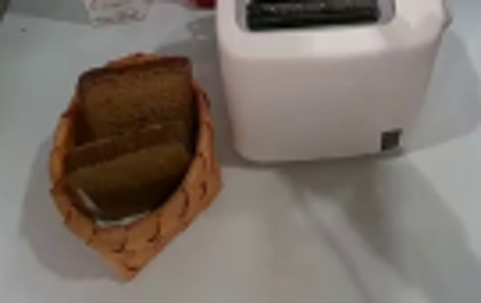
视觉工具实际返回图片 4
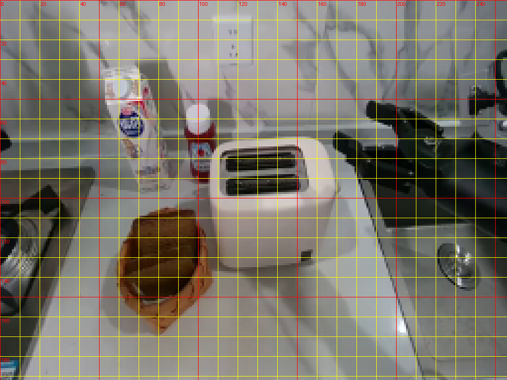
视觉工具实际返回图片 5
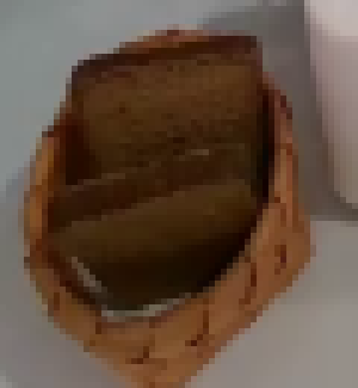
视觉工具实际返回图片 6
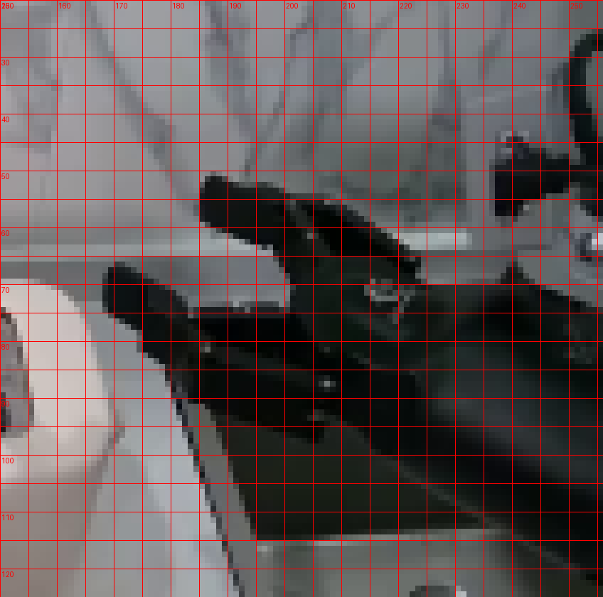
视觉工具实际返回图片 7
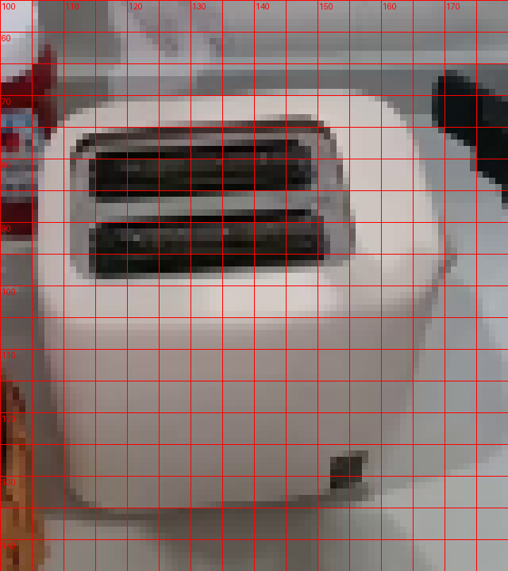
视觉工具实际返回图片 8
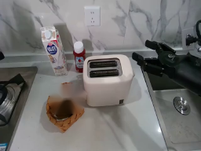
视觉工具实际返回图片 9
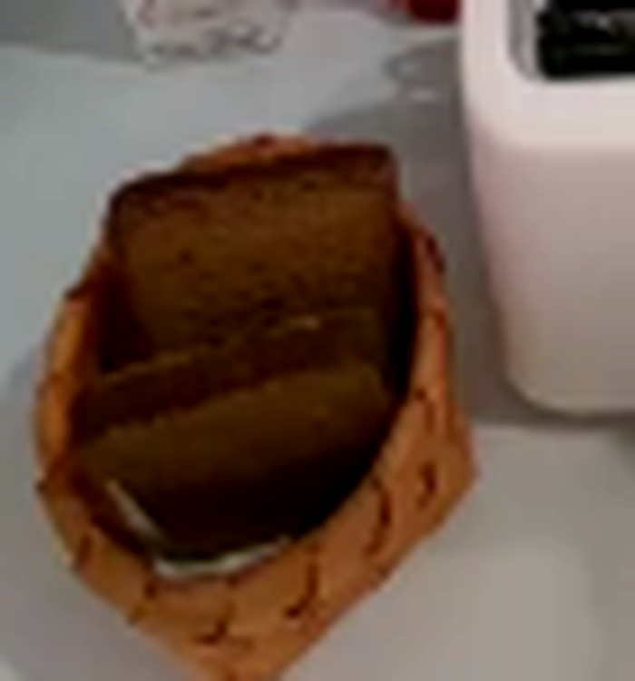
视觉工具实际返回图片 10
视觉工具实际返回图片 11
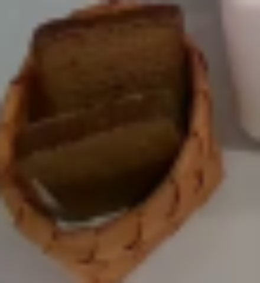
视觉工具实际返回图片 12
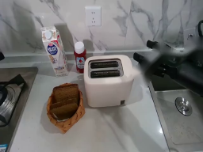
视觉工具实际返回图片 13

视觉工具实际返回图片 14
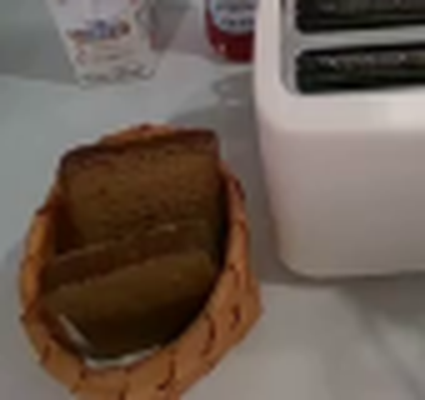
视觉工具实际返回图片 15
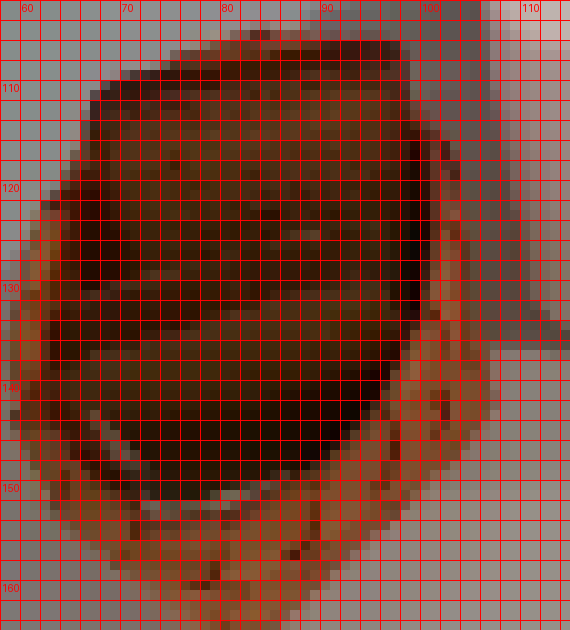
视觉工具实际返回图片 16
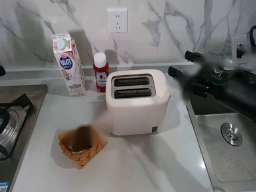
视觉工具实际返回图片 17
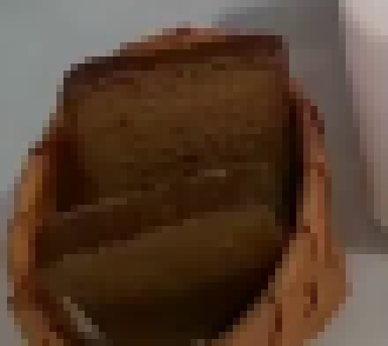
视觉工具实际返回图片 18

视觉工具实际返回图片 19
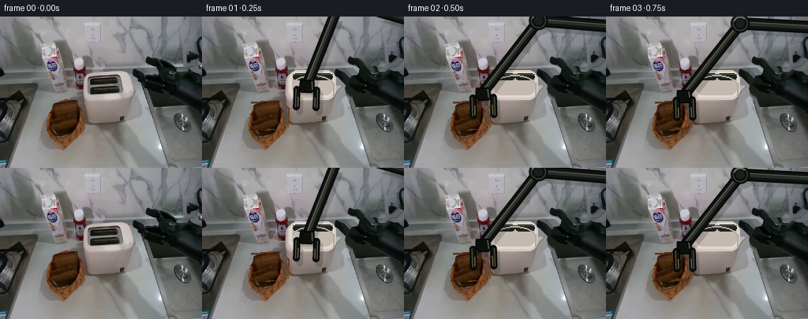
视觉工具实际返回图片 20
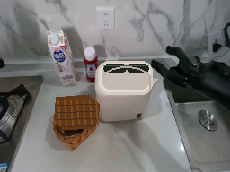
视觉工具实际返回图片 21
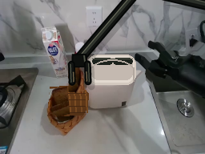
视觉工具实际返回图片 22
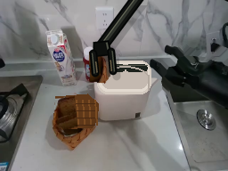
视觉工具实际返回图片 23
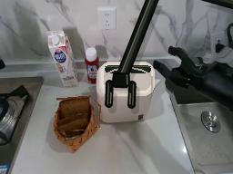
视觉工具实际返回图片 24
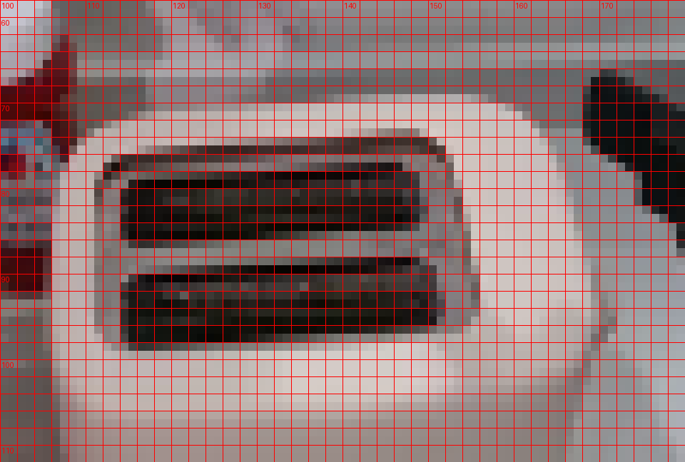
视觉工具实际返回图片 25
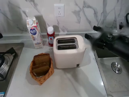
视觉工具实际返回图片 26
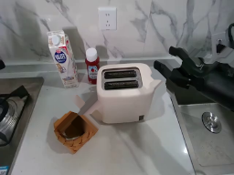
视觉工具实际返回图片 27
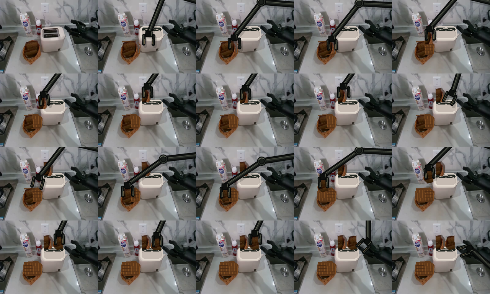
视觉工具实际返回图片 28
视觉工具实际返回图片 29
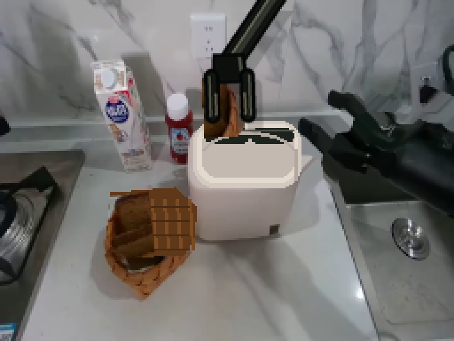
视觉工具实际返回图片 30
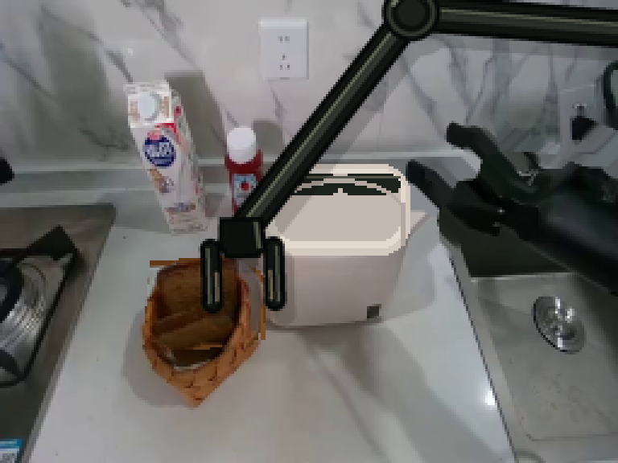
视觉工具实际返回图片 31
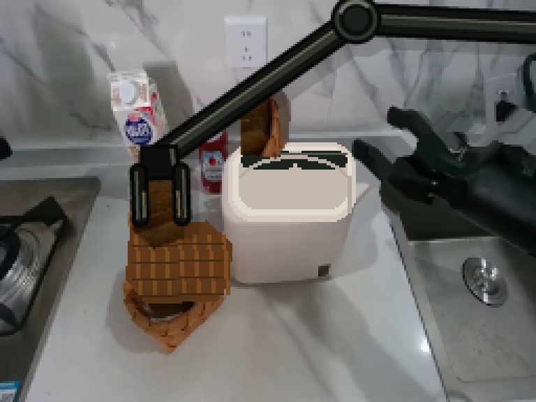
视觉工具实际返回图片 32
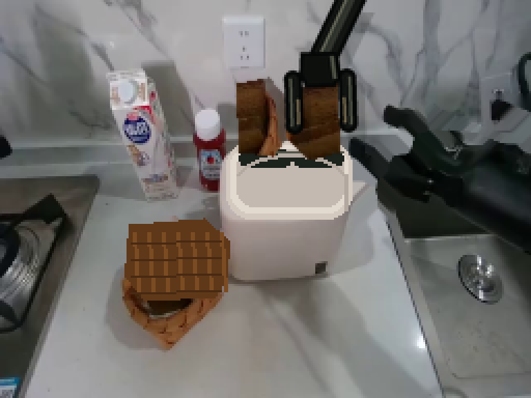
视觉工具实际返回图片 33
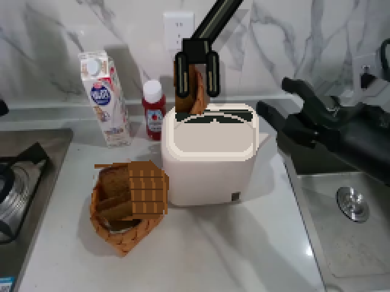
视觉工具实际返回图片 34
保存候选 1 份；完成命令 89 次；可验证图片返回 34 张。原始 API 响应与完整日志保留在本地。